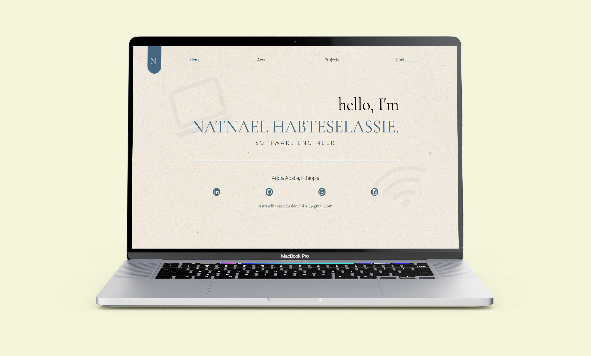
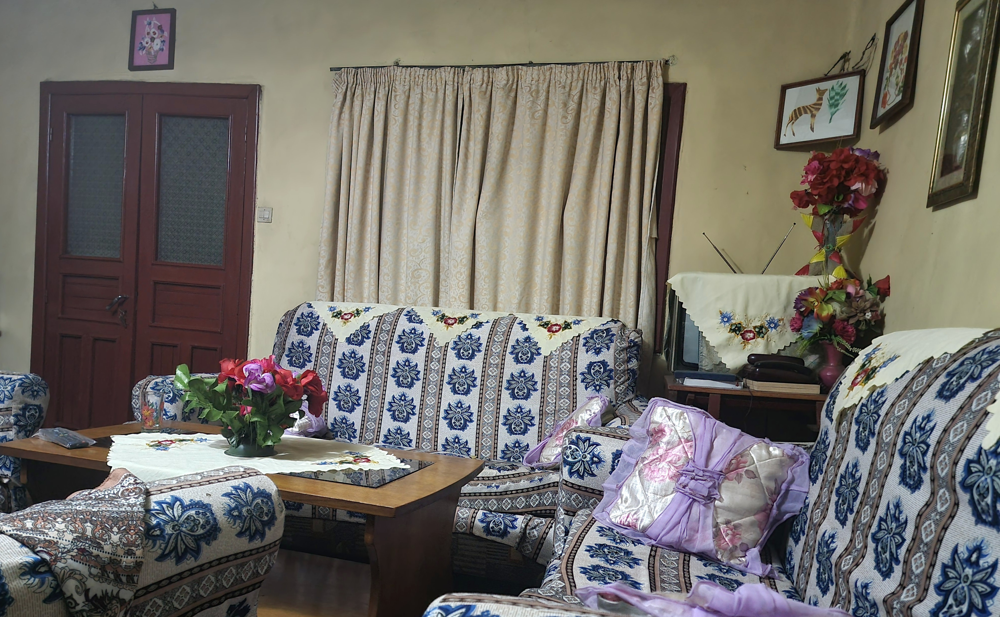

Personal Portfolio

Overview:
This project is a personal developer portfolio designed and built from the ground up to showcase my work, technical skills, and software engineering journey. Designed in Figma and developed using semantic HTML5, modern CSS (Flexbox & Grid), and JavaScript, it features a clean, responsive aesthetic inspired by personal memories and a focus on performance and user experience.
Design & Responsiveness:
The layout was crafted with a mobile-first responsive mindset, ensuring seamless navigation and readability across various viewports. Explore how each page adapts across different devices below:
Technology Stack:
- HTML
- CSS
- JavaScript
- Figma
- Canva
Features:
- Hero Section - Mainly built using flexbox
- About Page - A simple page for introduction
Development:

Above is the photo of the house I grew up in. The outside was painted teal. Unfortunately, I don't have a photo to show you that but as you can see on the inside the main "theme" used to be beige and that's why I chose beige as the background color of my portfolio with a slightly tweaked teal as the accent color. These colors bring back a lot of my childhood memories.
Lessons Learned:
- Built responsive layouts from scratch with flexbox and CSS grid.
- Learned to translate a Figma design into semantic, accessible HTML.
- Developed an eye for typography, color theory, and visual hierarchy.
- Applied SEO and social sharing fundamentals through meta and Open Graph tags.
- Practiced deploying and maintaining a live site with Netlify.